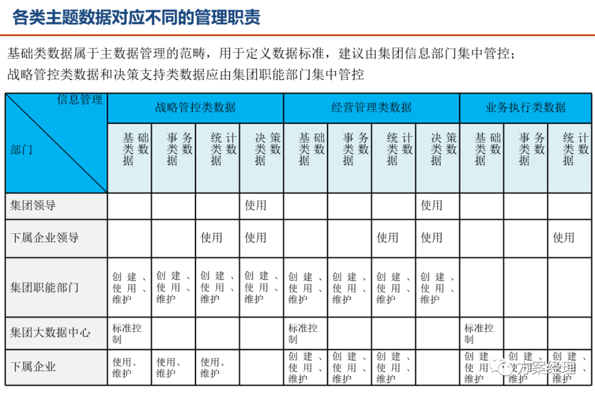

收录于话题
#大数据成神之路

八千里路云和月 | 从零到大数据专家学习路径指南
我们在学习Flink的时候，到底在学习什么？
193篇文章暴揍Flink，这个合集你需要关注一下
Flink生产环境TOP难题与优化，阿里巴巴藏经阁YYDS
Flink CDC我吃定了耶稣也留不住他！| Flink CDC线上问题小盘点
我们在学习Spark的时候，到底在学习什么？
在所有Spark模块中，我愿称SparkSQL为最强！
硬刚Hive | 4万字基础调优面试小总结
数据治理方法论和实践小百科全书
标签体系下的用户画像建设小指南
4万字长文 | ClickHouse基础&实践&调优全视角解析
【面试&个人成长】2021年过半，社招和校招的经验之谈
大数据方向另一个十年开启 |《硬刚系列》第一版完结
我写过的关于成长/面试/职场进阶的文章
当我们在学习Hive的时候在学习什么？「硬刚Hive续集」